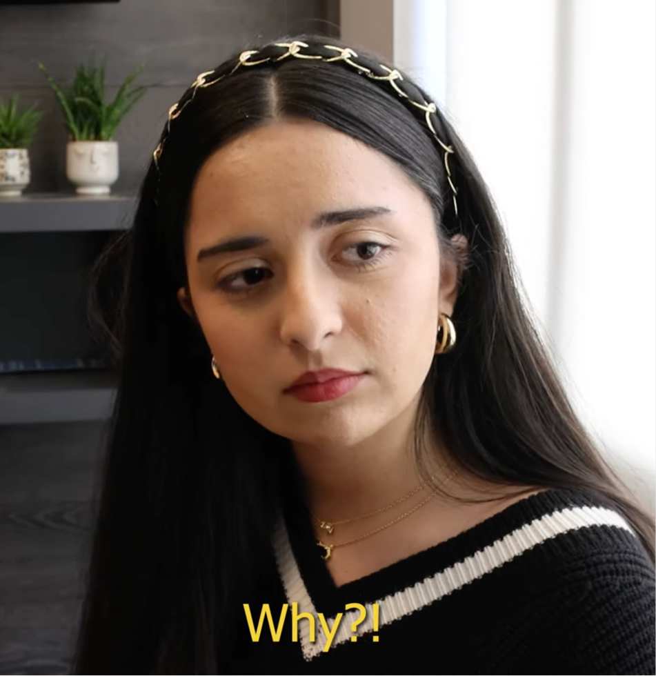

Äpfel im Mai
An award-winning short film created for my German class during my first year at the University of Waterloo, told strictly using class-taught vocabulary.

Project Overview
This film was the final project for my GER102 class during my first year at the University of Waterloo. The primary creative challenge was to build a compelling story while strictly adhering to the vocabulary learned throughout the term. Driven by a high level of passion and excitement for filmmaking compared to standard class expectations, I took the lead on production to ensure a professional result.
My Role
I served as the Director, Screenwriter, and Editor, managing the project from initial script drafts through to final post-production.
- Post-Production: Completed the full edit using Adobe Premiere Pro, focusing on narrative pacing and atmospheric consistency.
- Technical Management: Secured professional equipment, including a high-end camera and boom mic, to elevate the film’s quality beyond a typical student project.
- Creative Direction: Recruited a crew of helpers and directed my fellow actresses on their lines and positioning while simultaneously performing the lead role.
Process & Thinking
Balancing the dual roles of lead actress and director while overseeing technical production required extensive pre-production. To ensure clarity and speed on set, I developed a detailed shot list for the camera operator that specified exact angles and shot types. This thorough preparation allowed me to manage the high-pressure multitasking of preparing my own lines while giving precise direction to my team.
Outcome
The film highlights my ability to lead a team and maintain high production standards under specific creative constraints. This project was recognized for its storytelling and technical execution, resulting in my second Golden Boar Award win at the University of Waterloo during my first year.
Watch the Film
